AI-Powered Bill Sentiment Analysis


BillsSentiments is an advanced AI-driven analytical dashboard built to tackle the challenge of manually analyzing thousands of public stakeholder comments on draft legislations.
GitHub: 0xarchit/BillsSentiments
Overview
By leveraging Natural Language Processing (NLP), Large Language Models (LLMs), and Retrieval-Augmented Generation (RAG), this platform automates:
- Sentiment Analysis: Classifying feedback as Positive, Neutral, or Negative.
- Contextual Summarization: Generating concise summaries of lengthy legal texts.
- Semantic Search: Enabling "Chat to Document" functionality via Vector search.
- Visual Analytics: Providing word clouds and statistical breakdowns for policy makers.
Input Data Example
The system analyzes complex legislative texts and diverse public comments.
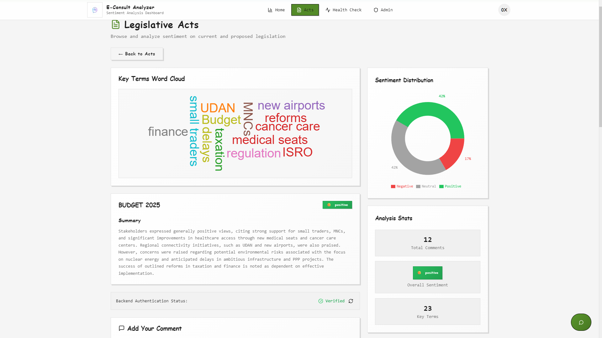
System Architecture
The system is built on a Microservices-inspired architecture, containerized with Docker for easy deployment. It features a FastAPI backend for heavy ML lifting and a sleek Next.js frontend for an immersive user experience.
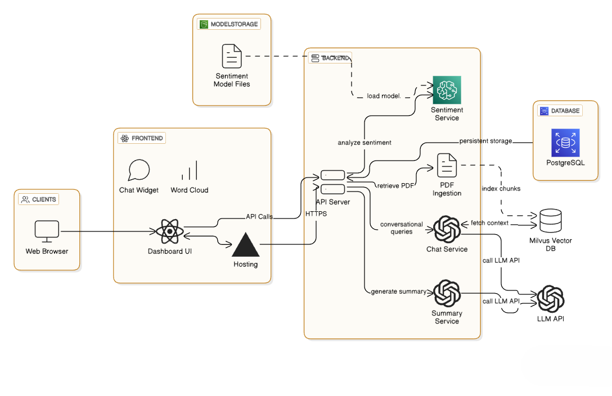
Core Workflow
- Ingestion: Comments are uploaded (CSV) or fetched via API.
- Processing:
- Sentiment Engine: BERT-based model predicts sentiment scores.
- Vectorization: Embeddings are generated and stored in Milvus (Zilliz) for RAG.
- Vector Storage: The Milvus vector database efficiently indexes these embeddings for rapid similarity search.
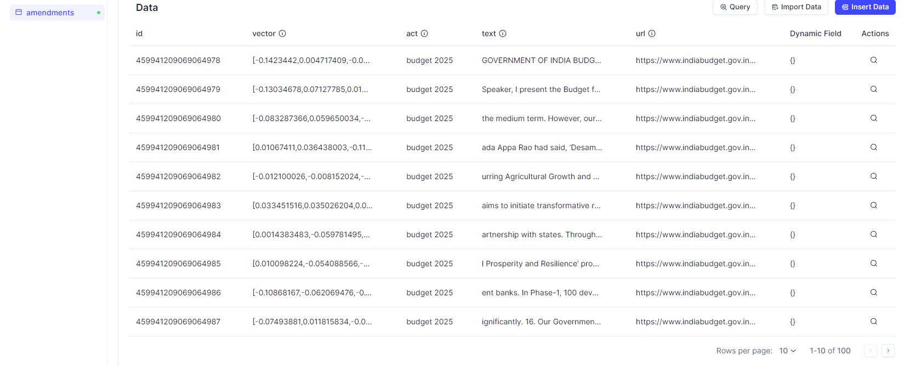
- Analysis: Gemini 2.5 Flash (via LangChain) generates summaries and answers RAG queries.
- Presentation: Results are displayed on a real-time Interactive Dashboard.

Key Features
1. Interactive Dashboard
A modern, responsive UI showing real-time statistics, sentiment distribution, and recent activities.
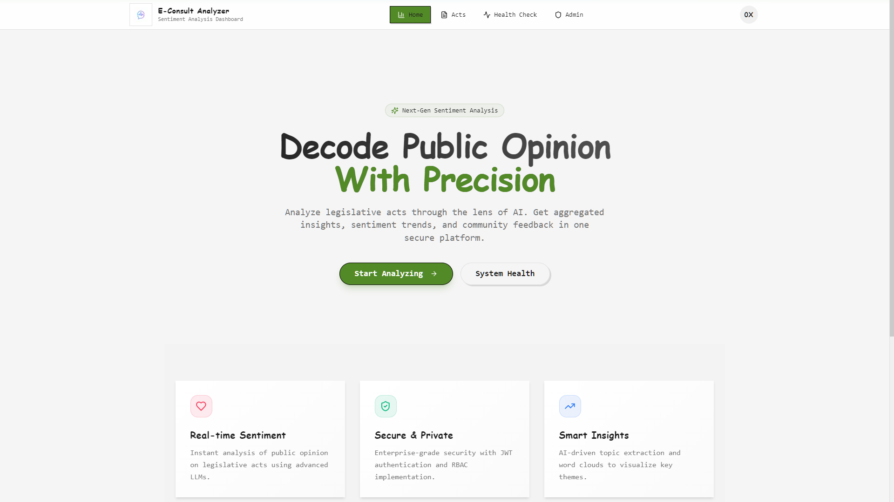
2. RAG-Powered Chatbot
Ask questions about specific legislative acts. The bot retrieves context from the official document PDFs and stakeholder comments to provide evidence-backed answers.
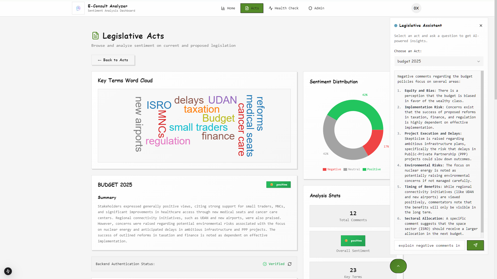
3. Automated Insight Generation
View overall sentiment trends and word clouds highlighting key topics of discussion for each act.
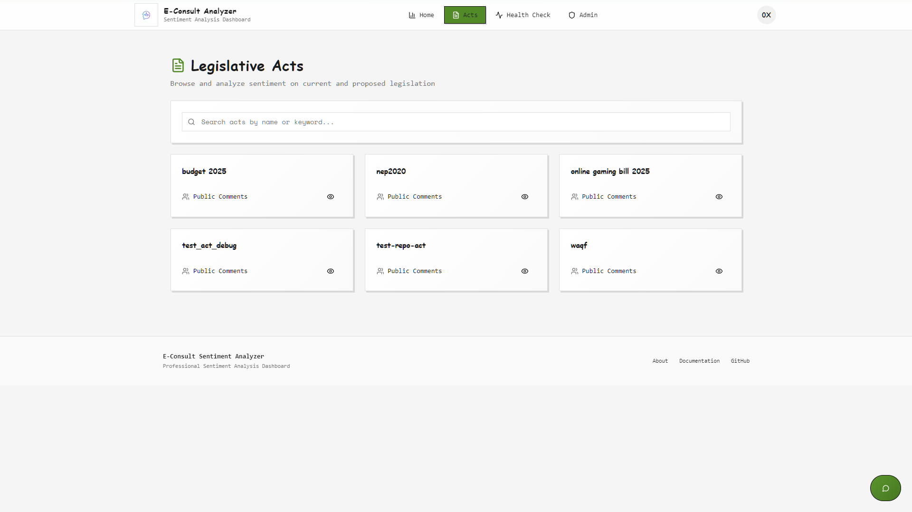
4. Detailed Comment Analysis
Drill down into individual comments with granular sentiment scoring and metadata.
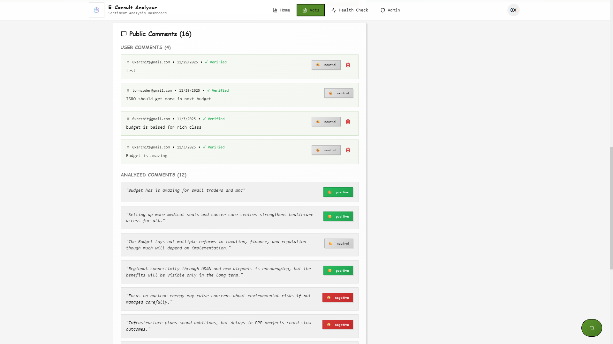
5. Secure Authentication
Robust user management and authentication system powered by Supabase.
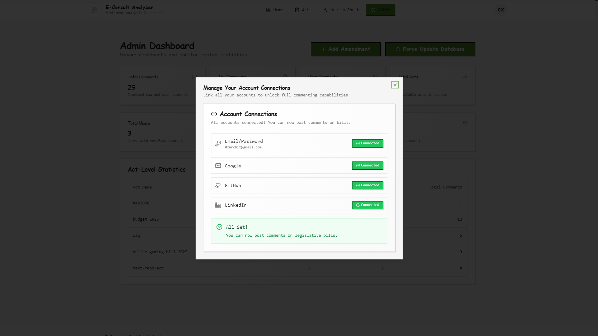
6. Admin & System Health
Role-based access control (RBAC). Admins can manage acts, trigger model updates, and monitor the health of all system components.
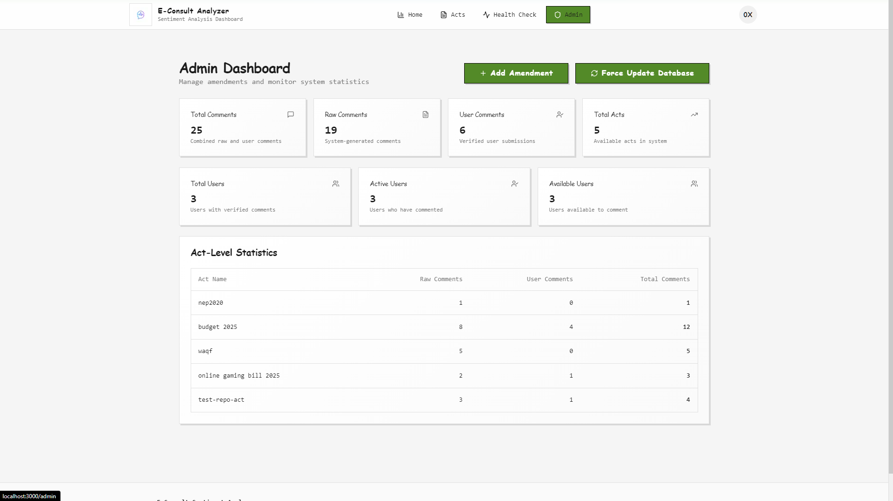
System Health Monitoring:
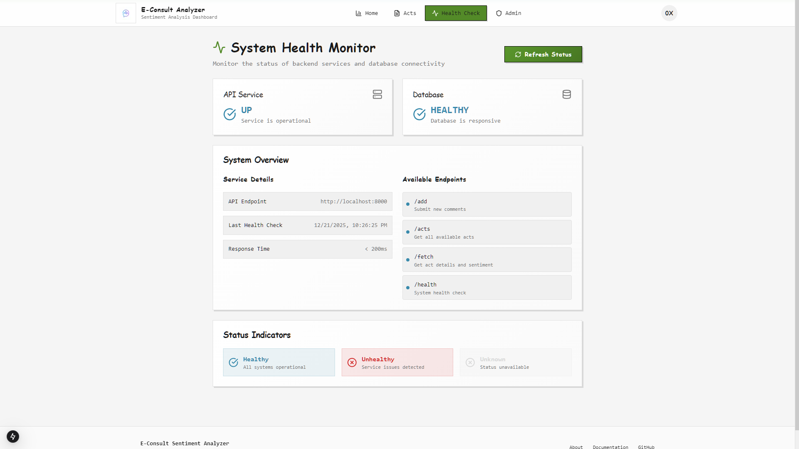
Tech Stack

API & Database
The backend exposes a comprehensive REST API documented via Swagger UI.
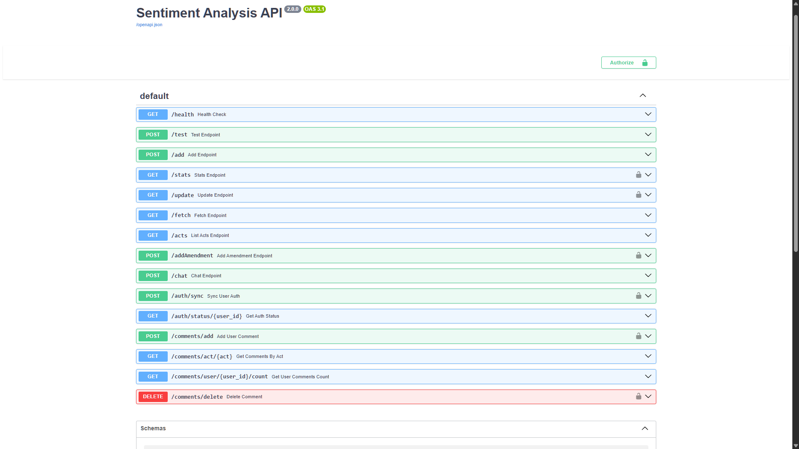
Database Schema
A robust relational schema handles Users, Acts, Comments, and Authentication states.

Getting Started
Option A: Docker (Recommended)
Deploy the entire stack (Frontend + Backend) with a single command. The backend is isolated internally, exposing only the frontend.
# 1. Clone the repository
git clone https://github.com/0xarchit/BillsSentiments.git
cd BillsSentiments
# 2. Setup Environment Variables
# Populate .docker-env with your API keys (Supabase, Gemini, etc.)
# 3. Launch
docker-compose up --buildAccess the app at http://localhost:3000.
Option B: Manual Setup
Backend
# Setup Python Environment
python -m venv venv
.\venv\Scripts\activate
pip install -r requirements.txt
# Run Server
uvicorn app:app --reload --port 8000Frontend
cd Frontend
npm install
npm run dev
# App runs at http://localhost:3000Testing & Performance
We maintain rigorous testing standards including unit tests for API endpoints and consistency checks for the ML models.
Model Evaluation
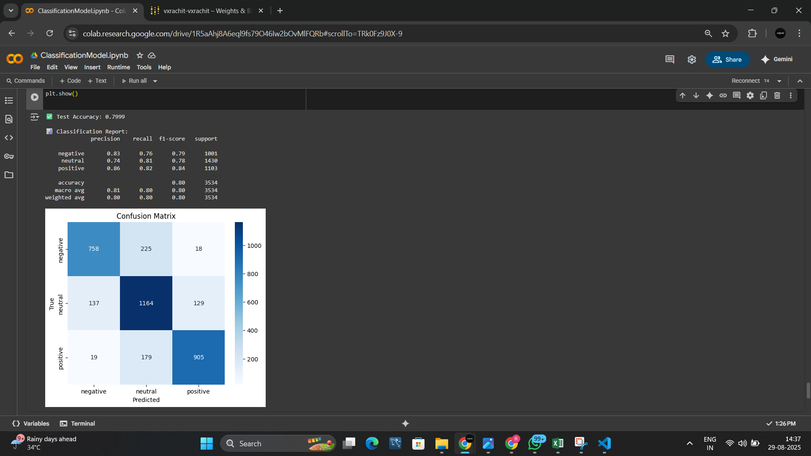
Test Coverage
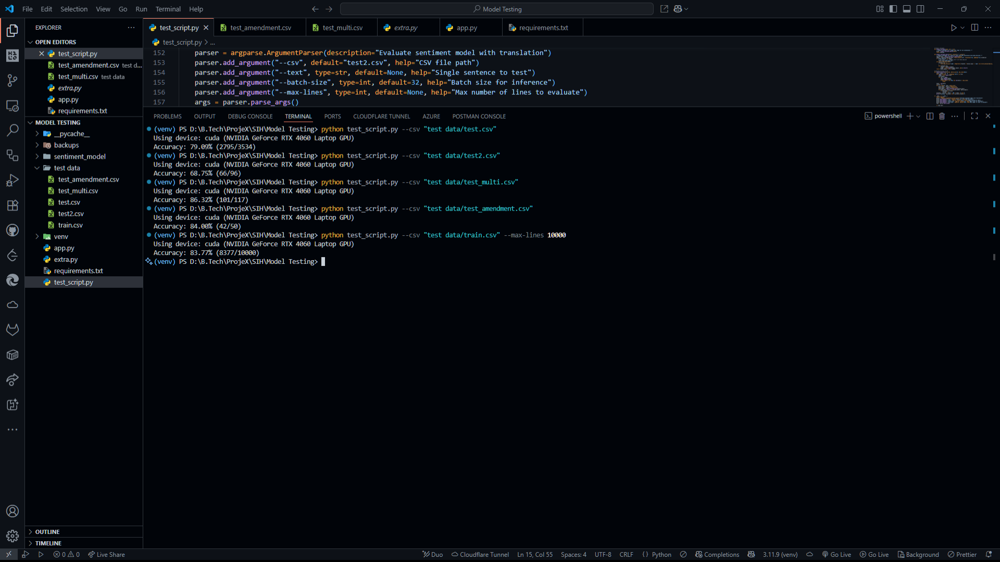